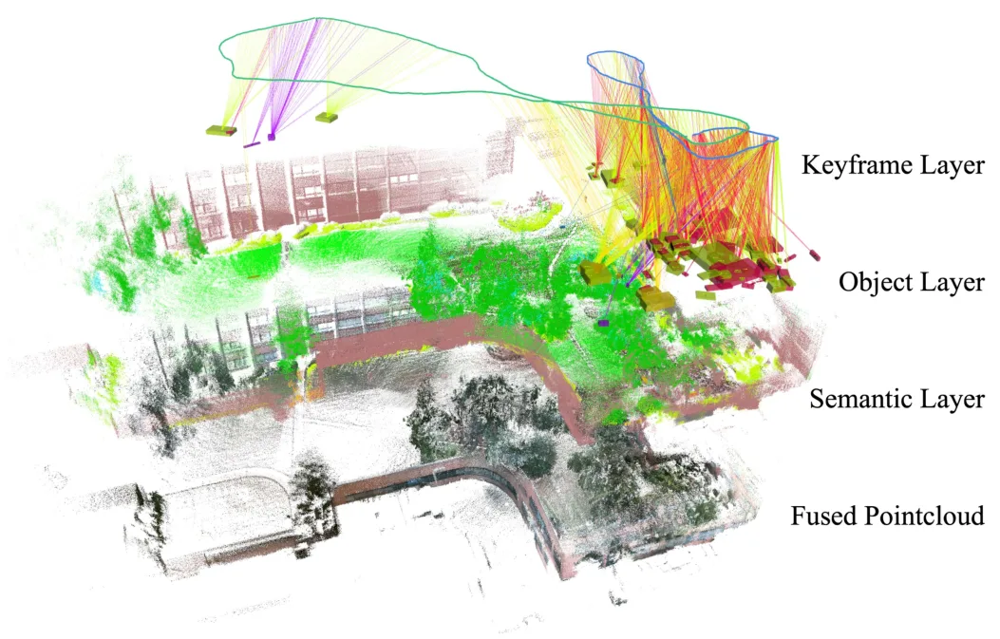
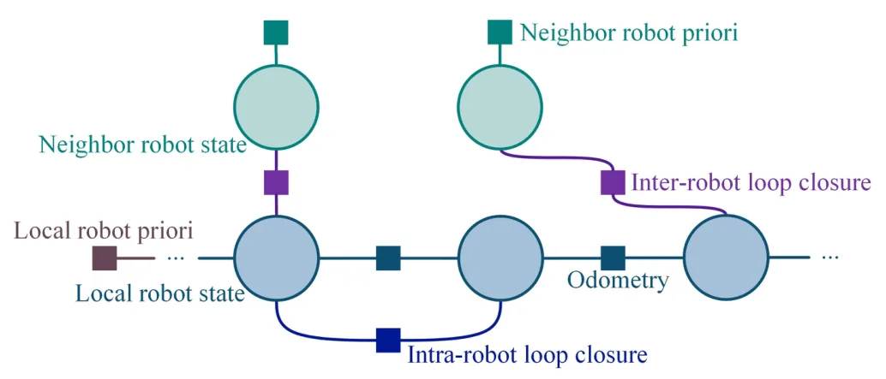
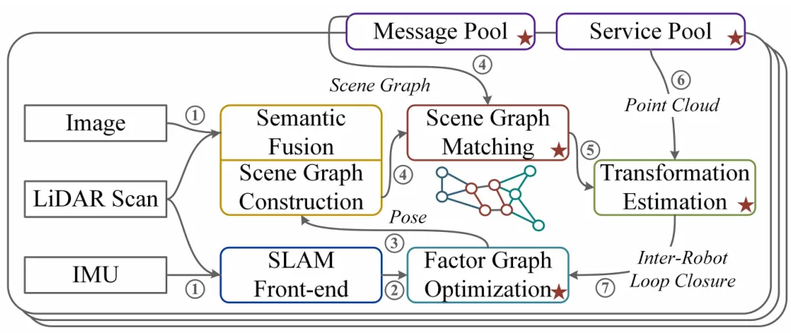
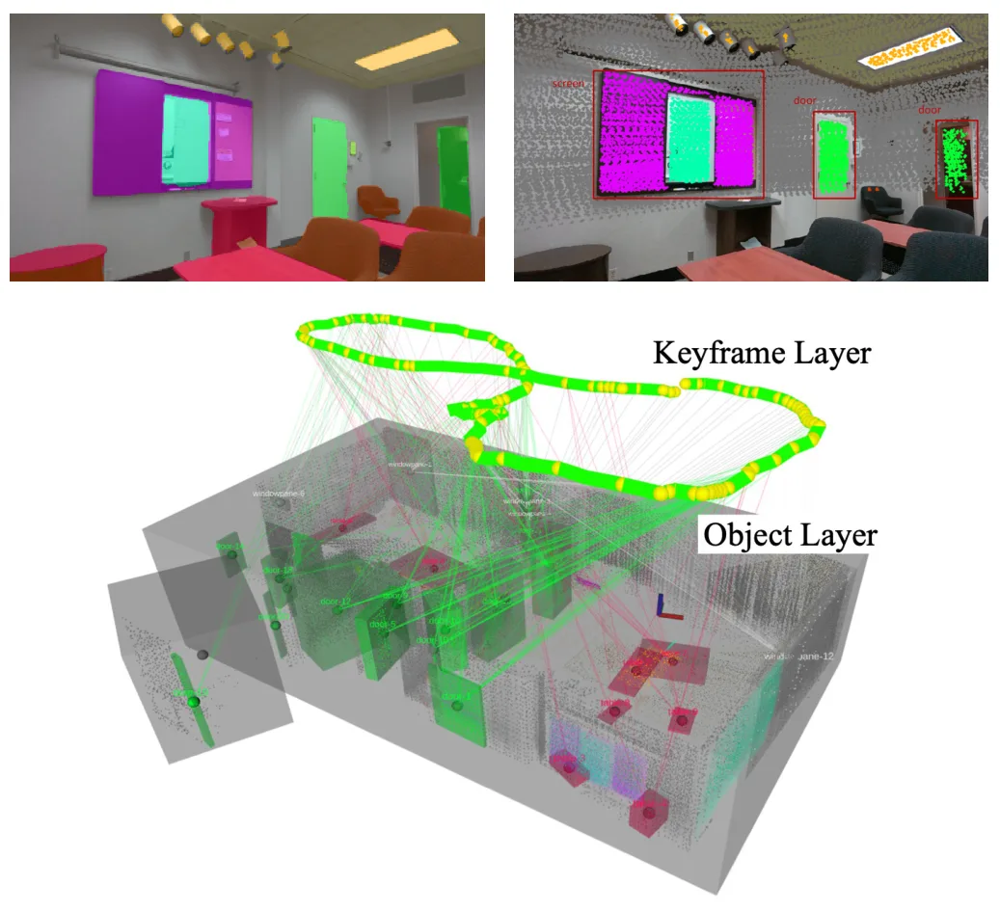
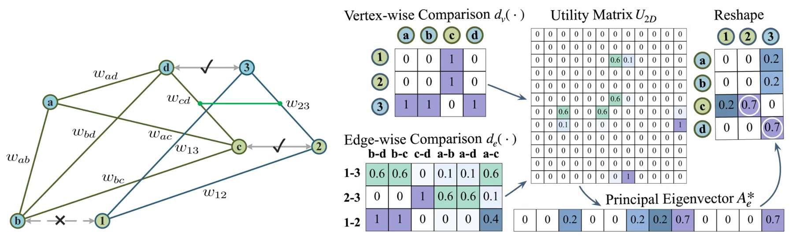
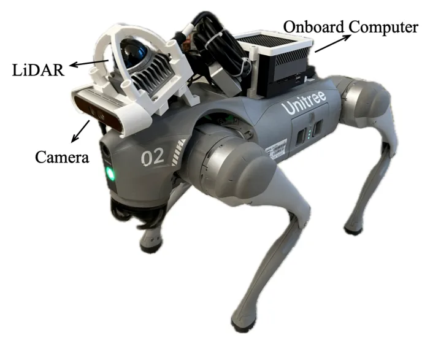
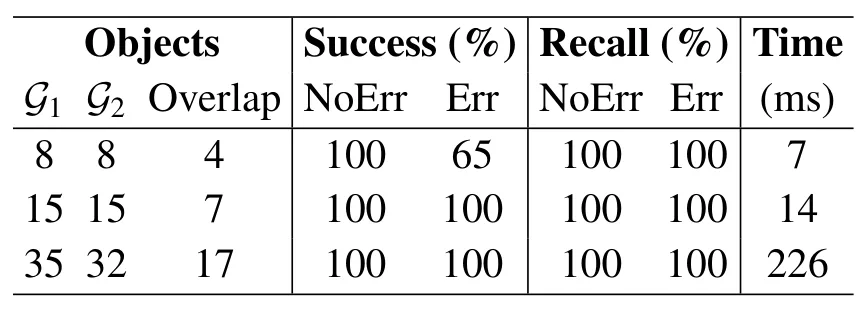
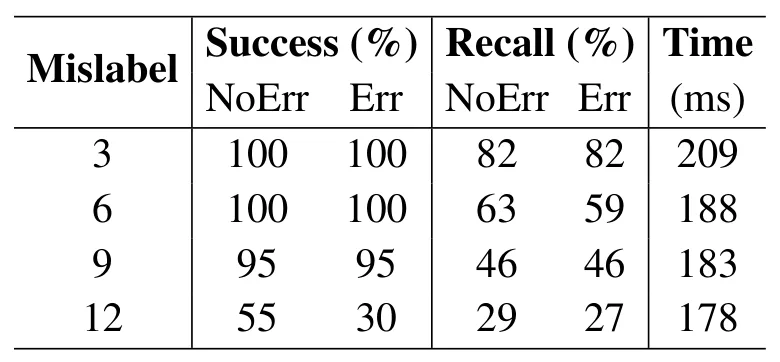

SGM-SLAM：面向数据高效分布式 SLAM 的场景图匹配SGM-SLAM: Scene Graph Matching for Data-Efficient Distributed SLAM
今天最贴近 SLAM 后端和多机器人协作定位的论文，覆盖 LiDAR、camera、IMU 和真实机器人数据；需要进一步核验物体检测误差、动态目标和大规模图匹配下的鲁棒性。
一句话工作总结
SGM-SLAM 用物体标签和质心构成 scene graph，通过轻量图匹配产生多机器人间约束，减少分布式 SLAM 通信量。
摘要
本文提出一个面向多机器人团队的数据高效分布式 SLAM 框架，机器人装备 LiDAR、相机和惯性传感器。框架用场景图匹配识别机器人间测量约束，不像以往依赖特征级匹配的方法，它只使用物体标签和质心执行 scene graph matching。系统通过融合 RGB-LiDAR 点云构建语义分割点云层和离散有界物体层，并与估计轨迹共同组成场景图。机器人与邻居交换和匹配物体数据，通过多步数据交换与优化过程最大化通信效率。作者在仿真和 legged robot 室内外真实数据上验证了有效性与效率。
We introduce a data-efficient distributed Simultaneous Localization and Mapping (SLAM) framework designed for a team of robots equipped with LiDAR, cameras, and inertial sensors. Our framework uses scene graph matching to identify inter-robot measurement constraints. Unlike prior approaches that rely on feature-level matching, our framework is the first to perform scene graph matching using only object labels and centroids. Our approach constructs a scene graph by using fused RGB-LiDAR point clouds to generate both a semantically segmented point cloud layer, and a layer of discrete bounded objects, to accompany estimated robot trajectories. Scene graph matching is performed collaboratively through exchanging and matching object data with neighboring robots. To maximize communication efficiency, we utilize a multi-step data exchange and optimization process. We demonstrate the effectiveness and efficiency of our approach using both simulation and real-world datasets collected by legged robots in indoor and outdoor environments.
中文解读摘录
- 链接：abs / PDF；作者：Yewei Huang, Tixiao Shan, Abhinav Rajvanshi, Niluthpol Chowdhury Mithun, Yaxuan Li, Brendan Englot, Han-Pang Chiu；类别：cs.RO；采集 score=13。
- 核心思路：多机器人分布式 SLAM 不交换密集特征，而是用物体标签和质心构成 scene graph，通过图匹配寻找机器人间约束。
- 方法要点：融合 RGB-LiDAR 点云生成语义分割点云层、离散 bounded object 层和轨迹层；相邻机器人交换精简物体数据并做多步匹配与优化，以降低通信量。
- 关注点：这是今天最贴近多机器人 SLAM 后端和通信受限协作定位的工作；建议检查图匹配误匹配抑制、动态物体处理、跨视角物体检测一致性和真实 legged robot 数据规模。
图表/页面预览
{kind=link}

{kind=link}

{kind=link}

{kind=link}

{kind=link}

{kind=link}

{kind=link}

{kind=link}
